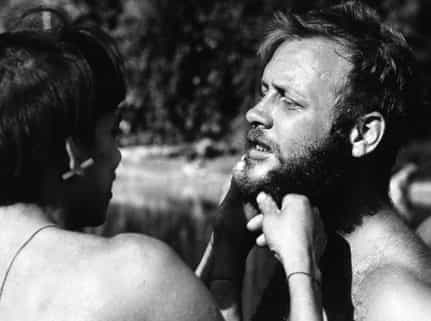
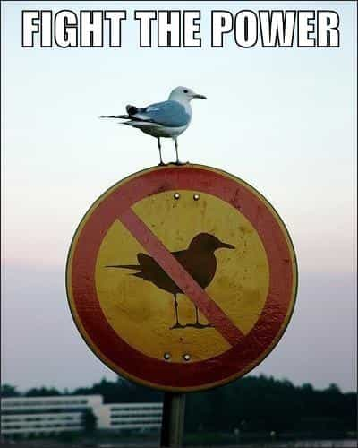

Much to the amusement and derision of those in the reactosphere, CNN recently did an article extolling the virtues of cuckoldry. More specifically, the article delineates that for some couples (perhaps using the term “some” to play it safe), cuckoldry might have a positive effect on a couple’s relationship and even strengthen it.
In our current political climate, the term “cuck” — short for “cuckservative” — has become an insult of the so-called alt-right, aimed at men they view as spineless and emasculated. The slur has its roots in the concept of cuckolding, or having an adulterous partner.
But, according to a recent study by David Ley, Justin Lehmiller and the writer Dan Savage, acting on cuckolding fantasies can be a largely positive experience for many couples, and hardly a sign of weakness.
As somebody who has extensively studied humanity in all of its splendor, I will be the first to tell you that while there have historically been a few of those fabled “take my wife, please!” tribes where everybody is running about having sex all willy nilly with everybody else, there are many more tribes—including, purely by coincidence, the tribes that actually amounted to anything in the grand scheme of things—in which the thought of being cuckolded is rightfully considered one of the greatest shames and humiliations.
What’s notable is that even many tribes that are primitive and unlettered are enraged by the thought of getting cucked behind their back—and if you don’t believe me, the Yanomamo, the “fierce people” of the Amazon rainforest, can demonstrate how seriously they take patriarchy and a woman’s faithfulness (hint: it occasionally involves lighting a woman’s cooch on fire).

Said it before, I’ll say it again: Napoleon Chagnon needs to be feted in every school
So with all that being said, it seems that cuckoldry is something universally feared and reviled amongst almost all masculine cultures. And rightfully so—if your wife (or husband, women are allegedly capable of engaging in the cuck fetish as well) is looking to somebody else for sex, it means you’re not satisfying your spouse. It seems pretty obvious an affront, so why are our societal betters at CNN trying to push it upon us?
Their theory
According to research by Dan Savage and Justin Lehmiller—and, importantly, presented by CNN—cuckoldry is a perfectly normal desire to have; so much so that the majority of American men have had cuckold fantasies at some point in their life (again, according to the CNN article). Part of what makes cuckoldry such an erotic act is that it is a taboo act—the big bad patriarchal society that we live in claims that there’s something wrong with allowing some other man to bang your wife, and in fantasizing about that you’re being a brave rebel, thus more of a man than those patriarchal assholes!

Indeed, those who have anxiety or abandonment issues, lack intimacy and communication, and aren’t carefully planning the fetish, might have a negative experience with cuckolding—as you can see, only the strong allow themselves to get cucked!
Those of you who read the CNN article linked at the beginning might notice that the article is rather sparse on explanations as to how cuckolding is supposed to be such a wonderful positive for a relationship, only that it is. It might have something to do with the fact that the recommended cuckold formula involves honesty and intimacy between the cuck and the woman, or it might have to do with the openness of a “taboo” fetish, but I think a quick glance at the writers of this study might shine some light on why all of a sudden they’re claiming cuckolding is such a boon.
The writers
Dan Savage is a name that will likely need no introduction to politically savvy readers—maybe a man, maybe a tulpa of every single negative gay stereotype, Savage is a syndicated columnist in various newspapers around the country who writes about various sexual issues both hetero and homo and everything in between.
He’s also known for his “Santorum” neologism campaign, occasional acts of lying, accusations of holding various prejudices within the merry band of twats that is the intersectional righteous community, and launching his “It Gets Better” campaign in support of downtrodden gay youths, with the support of such tiny and weak entities as, er, the United States Government and the Microsoft Corporation—plucky underdogs, surely.
Justin Lehmiller, in addition to looking disturbingly like a brunette version of Kenneth from 30 Rock is the Director of the Social Psychology Graduate Program and an Assistant Professor of Social Psychology at Ball State University. He is also a Faculty Affiliate of The Kinsey Institute at Indiana University and runs the allegedly popular blog Sex and Psychology.
At the risk of seeming unprofessional, I think there are a couple of conclusions that can be drawn from looking at the authors of the study, and CNN’s reaction to it.
Is being a cuck really positive for your relationship?
First of all, it’s pretty well-documented that Dr. Alfred Kinsey, like most social scientists, fudged a lot of his data in order to push an ideological agenda, so I don’t think it’s too much of a stretch to think that an employee of the Kinsey institute might have similar goals. But interestingly enough, that isn’t the biggest problem with this article.
Rather than the study being biased, it appears that the CNN report on the study was what was biased. Looking at the study itself, the study says nothing about cuckoldry being a net positive for heterosexual couples. The study’s abstract says that:
…The present study investigated fantasies about and experiences with cuckolding in a large and diverse sample of predominately gay-identified men [underline was put in by the writer]… Our findings also indicate that frequent fantasies about cuckolding are linked to several overlapping sexual interests (e.g., voyeurism, group sex) and, further, the content of these fantasies is associated with a number of individual differences (e.g., agreeableness, sensation seeking, sociosexuality). Finally, this study also suggests that gay men who act on their cuckolding fantasies tend to report positive experiences; however, the likelihood of reporting positive outcomes appears to depend upon one’s personality and attachment style.
In other words, the study itself doesn’t seem to be the sort of “corrupting the masculine men” thing that the manosphere thinks it is. Indeed, Savage and Lehmiller admit that “…It’s not cuckolding if there isn’t an element of humiliation, degradation or denial,” and that the fetish isn’t for everybody. CNN just wanted to portray it as something that Average Joe and Jane should do.
So why would CNN want to make it seem like it can “Strengthen a relationship and be a positive experience for [heterosexual] couples”? As a specific attempt to weaken and humiliate American men? That seems likely. Just think about that, CNN managed to out-poz Dan Savage.
Read More: Is Anthony Bourdain Getting Cucked by his MMA Wife?